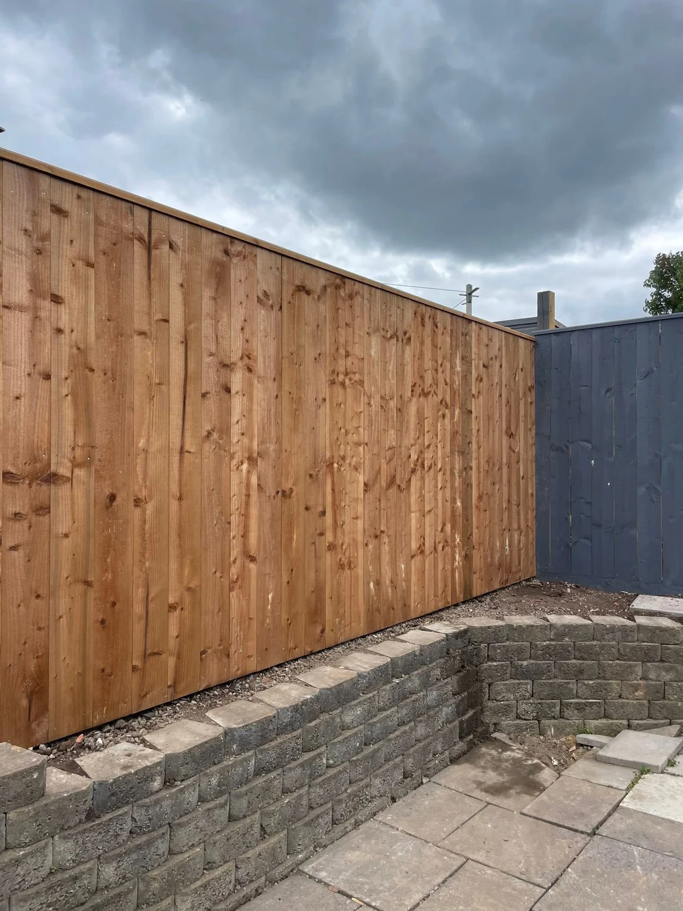

AUSTIN CONSTRUCTION · NORTH EAST
Fencing & retaining walls.
Privacy, structure and a clean finish.
AUSTIN CONSTRUCTION
Start with your property.
Timber fencing defines the boundary while retaining walls help organise changes in level. Talk to us about the existing layout, access and the height and finish you have in mind.
Send your postcode, a few photographs and the approximate size of the area. We will discuss the scope, access and finish you have in mind.
Talk about your project →OUR PROJECTS
Fencing & retaining walls projects.
Select a photo for the complete view. Related building and landscaping details are included.
REQUEST A QUOTE
Let’s talk about your project.
Tell us what you have in mind. This form opens a WhatsApp draft with all your details, ready for you to review, add photos and send.